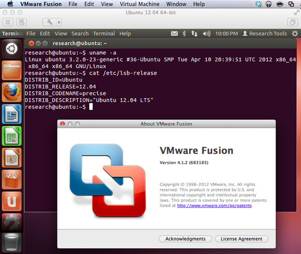
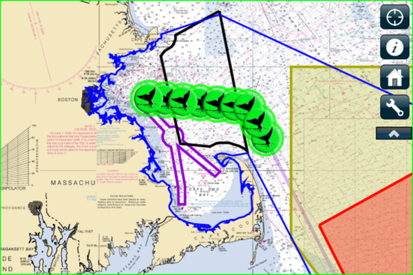
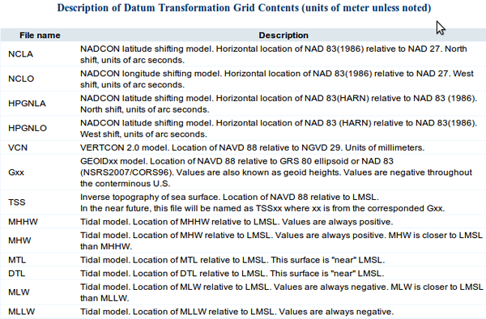
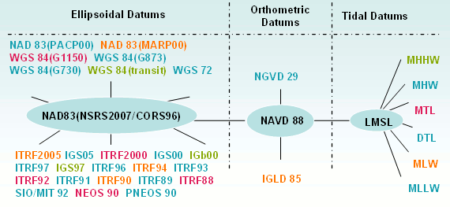
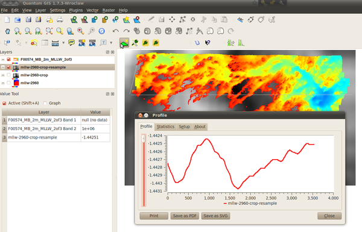
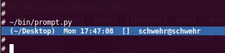
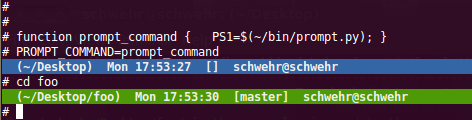
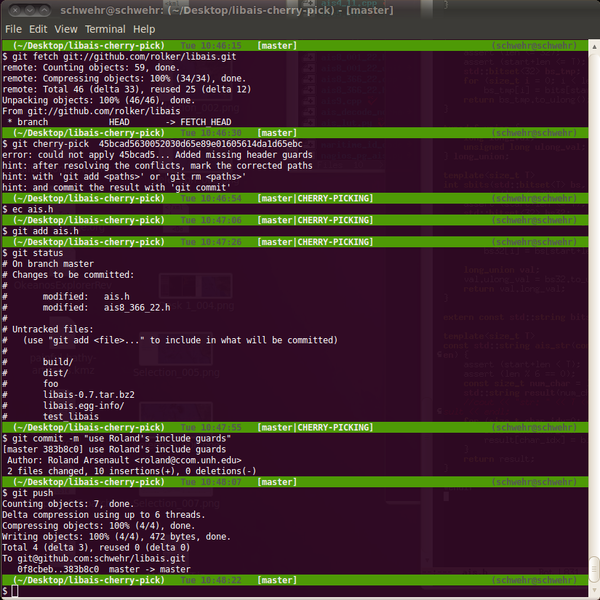

05.25.2012 08:52
SIO Introduction to Computing free book
I got to spend yesterday at Scripps
Institution of Oceanography. However, my list of people that I
wanted to track down and talk to is longer than the list of people
that I did manage to talk to. I taught a lecture for David Sandwell
and Helen Frickers' SATELLITE
REMOTE SENSING âÄì SIO 135/SIO 236. I always
worry that my lecture style is jarringly different than what the
students are used to, but the students a lot of really great
questions, which is totally awesome!
After teaching, I got to sit down with Lisa Tauxe and Neal Driscoll and talk shop. Turns out that Lisa and Peter Shearer have turned the notes from their into a book for (via LaTeX!): Introduction to Computing at SIO: Notes for Fall class, 2011 (SIO 233). The 235 page document covers the UNIX Command Line (using csh, NOT bash ), Fortran, GMT/Fink, Python, NumPy, Matplotlib, Scipy, and LaTeX. It's great to see other takes on teaching this kind of thing. The differences between teach styles and content are what make the ecosystem of courses on the web useful and interesting. I would not cover Fortran and would swap csh/tcsh for the much more power pair of bash/ipython, but you should pick and choose the parts that you want for all that's out there. This book gets to material that I wanted to teach last fall but never got to write up.
After teaching, I got to sit down with Lisa Tauxe and Neal Driscoll and talk shop. Turns out that Lisa and Peter Shearer have turned the notes from their into a book for (via LaTeX!): Introduction to Computing at SIO: Notes for Fall class, 2011 (SIO 233). The 235 page document covers the UNIX Command Line (using csh, NOT bash ), Fortran, GMT/Fink, Python, NumPy, Matplotlib, Scipy, and LaTeX. It's great to see other takes on teaching this kind of thing. The differences between teach styles and content are what make the ecosystem of courses on the web useful and interesting. I would not cover Fortran and would swap csh/tcsh for the much more power pair of bash/ipython, but you should pick and choose the parts that you want for all that's out there. This book gets to material that I wanted to teach last fall but never got to write up.
05.22.2012 17:29
More whale tracking - US West Coast
Scientists hope OSU whale-tracking data can reduce accidental
deaths
Is this connected to the WhaleAlert folks in New England in any way?
A multi-agency team of scientists has launched a project to reduce the number of whales killed from ship strikes and entanglement in fishing nets by identifying high-risk areas along the West Coast of the United States. ...Check the press release for more. Bruce Mate at OSU.
Is this connected to the WhaleAlert folks in New England in any way?
05.22.2012 10:18
gnu screen program
I have been pushing hard to get my
workflow straight (it's shifted a fair bit this year). Back in
2004, I met Aurelio on
the JPL MER mission. He was seriously rocking the gnu screen. I got to hang
with Aurelio last week when Code for America, where he
currently works, hosted the geomeetup about RedHat's OpenShift. I
asked Aurelio if he would share some of his wizardry with screen. I
am just getting into using "emacsclient -nw" to connect to an
existing emacs session from an ssh'ed shell session, but the emacs
shell never quite does it for me. So here is what Aurelio had to
say:
Guest post by Aurelio
I normally use screen as soon as I log on to a remote server for the first time, essentially as a means to make sure that the session stays alive in case the connection is dropped.
There are other scenarios as well, and it essentially let's me tab through windows on a remote terminal w/o having to log in for each session.
Update 2012-Jun-19: Mark Sibenac suggested Byobu to go along with GNU screen or tmux.
Guest post by Aurelio
I normally use screen as soon as I log on to a remote server for the first time, essentially as a means to make sure that the session stays alive in case the connection is dropped.
$ ssh aurelio@tinio.org $ screenThis means that I can just log back in to the server and continue working from where I left off.
$ screen -rI've found this to be really useful for a few scenarios logging, db, irc, and at time's as a poor man's daemon. For logging, it's nice when I do something like apt-get upgrade on a lot of packages and have the peace of mind that if my laptop battery dies out the process continues on the server. For IRC, I continually have irssi running so that I can look back at conversations that I missed. As a poor man's daemon, I sometimes run a `./manage.py runserver` for development testing.
There are other scenarios as well, and it essentially let's me tab through windows on a remote terminal w/o having to log in for each session.
create new window: ctrl-a c switch to previous window: ctrl-a p switch to next window: ctrl-a nThe session windows can also be named with:
ctrl-a AI usually have them named, logging, runserver, working, etc.. which can be viewed with:
ctrl-a "Finally, to detach the session and go back to the regular terminal:
ctrl-a dHowever, with all that said my use of screen has actually diminished quite a bit since the JPL days and with the advent of services such as heroku where there is no server to 'ssh' into. I've mainly only been using it for IRC, but even that might be going away soon with the use of something like irccloud.com which I have started to really like.
Update 2012-Jun-19: Mark Sibenac suggested Byobu to go along with GNU screen or tmux.
05.19.2012 22:07
Virtual Machine for Research Tools - take 2
Today, I finally got myself a copy of
VMWare Fusion 4 for my MacBook Air with 10.7. I definitely works
much better than VMWare Fusion 3 did on 10.6 or 10.7 and I'm saying
that only after having created my first virtual machine with it. I
only logged in far enough to open a terminal, run uname and cat
/etc/lsb-release.
Made it a bit farther now that the ubuntu update servers seem to be happy again.
virtual-machine-ubuntu-12.04.org

Made it a bit farther now that the ubuntu update servers seem to be happy again.
virtual-machine-ubuntu-12.04.org
05.19.2012 18:47
Research Tools Lecture 14 - Parsing GPS GGA NMEA
27 lectures recorded last fall as
audio. I've converted 7 to youtube videos. Only 20 more to
go.
05.18.2012 20:49
Right whale AIS notice outage today
I am not directly in the middle of
things with the AIS whale notice app these days or I would have
thought to do this before the outage, but CCOM did some
network maintanence this evening and was off the network for a
couple of hours. That means that no matter what access method you
use (AIS+wifi, 3G+internet, wifi+internet, or
wifi+satellite+internet), you would not have been able to have seen
the buoy updates. The green buoys (or gray) will dissapear in 15-20
minutes and any existing yellow bouys with whale detections that
your iPhone or iPad have already received should stay on the phone
for up to 24 hours. I haven't looked to see what today's activity
has been, but the app is currently showing all buoys as grean (no
whale detected in the last 1-20 minutes).

05.17.2012 11:37
Research tools lectures 11-13
It's slow going putting my audio and
video recordings together into videos, but I am getting there. It
helps that I am starting to get desensitized to hearing my own
voice. Last fall, that drove me nuts while doing the first past
edits of the audio recorded with a Sansa Clip that I wore. That got
rid of the bazillion um's, ah's and false starts that I do way to
frequently. Recordings typically went from over 1.5 hours to under
an hour.
Here are the MP4 lecture videos that I'm uploading to YouTube. CC license so feel free to pass them around or even edit them.
Lecture 11 talks about using the ipython shell and basic python data types.
Lecture 12 covers ipython log files, reading comma separated values (csv) data, and using emacsclient to allow ipython to request emacs to edit a file.
Lecture 13 starts off with using ntpdate to set the clock. I then attempted to show traceroute, but then remembered CCOM's network totally blocks that. I start into python talking about true/false boolean logic in python. I then show running python scripts from inside an ipython shell with the "run" command and demonstrate a simple function and a class.
I haven't been brave enough to look at the YouTube automatic speech-to-text to see if it is doing any better than last fall. YouTube definitely does not understand Python and Emacs speak.
And a random after throught... I was reading for 2 minutes about rope and ropemacs. Rope lets emacs and python interact. If only I had infinite time! Ben Smith (the CCOM/Captain Ben version of Ben Smith, not Google's Ben Smith) pointed me to these last fall and I never got around to looking at them. And to take this to an extreme tangent: For all those out there who are getting fired up about crowd source / DIY bathymetry and hydrography, check out Ben's Hydrography page where he describes his survey setup that he put together a few years back.
Here are the MP4 lecture videos that I'm uploading to YouTube. CC license so feel free to pass them around or even edit them.
Lecture 11 talks about using the ipython shell and basic python data types.
Lecture 12 covers ipython log files, reading comma separated values (csv) data, and using emacsclient to allow ipython to request emacs to edit a file.
Lecture 13 starts off with using ntpdate to set the clock. I then attempted to show traceroute, but then remembered CCOM's network totally blocks that. I start into python talking about true/false boolean logic in python. I then show running python scripts from inside an ipython shell with the "run" command and demonstrate a simple function and a class.
I haven't been brave enough to look at the YouTube automatic speech-to-text to see if it is doing any better than last fall. YouTube definitely does not understand Python and Emacs speak.
And a random after throught... I was reading for 2 minutes about rope and ropemacs. Rope lets emacs and python interact. If only I had infinite time! Ben Smith (the CCOM/Captain Ben version of Ben Smith, not Google's Ben Smith) pointed me to these last fall and I never got around to looking at them. And to take this to an extreme tangent: For all those out there who are getting fired up about crowd source / DIY bathymetry and hydrography, check out Ben's Hydrography page where he describes his survey setup that he put together a few years back.
05.16.2012 16:31
William Eucker's thesis on arctic ship traffic
I meant to blog this a while back
when I first got a copy of William's thesis.
William Eucker, "A Geospatial Analysis of Arctic Marine Traffic", PhD dissertation, University of Cambridge, 2011, 156 page.
William Eucker, "A Geospatial Analysis of Arctic Marine Traffic", PhD dissertation, University of Cambridge, 2011, 156 page.
Recent changes in Arctic Ocean climate dynamics and marine activity in the region require re-evaluation of physical operating conditions, ship traffic patterns, and policy requirements. This study used (1) government surveys, (2) vessel reports, and (3) Automatic Identification System (AIS) messages to characterize the spatial and temporal variability of surface vessel traffic in relation to various sea-ice conditions on the Arctic Ocean during a year-long study from 1 April 2010 to 31 March 2011. Data sources, methods of analysis, and errors were discussed. Three principal topics were examined. First, sea-ice cover on the Arctic Ocean was analysed to determine the physical access for marine operations. Daily sea-ice concentration data based on satellite passive microwave measurements were used to calculate the extent of open water and duration of the sea-ice season. Second, ship traffic on the Arctic Ocean was analysed to determine the present patterns of human activity. Time-stamped AIS messages encoded with Global Navigation Satellite System (GNSS) positions received by a commercial satellite constellation from north of the Arctic Circle (66 Second, ship traffic on the Arctic Ocean was analysed to determine the present patterns of human activity. Time-stamped AIS messages encoded with Global Navigation Satellite System (GNSS) positions received by a commercial satellite constellation from north of the Arctic Circle ( ) were used to calculate the distribution of vessels per unit area. Satellite AIS data from SpaceQuest, Limited, were compared with land-based vessel observations during the study period from the Marine Exchange of Alaska and the Port of Longyearbyen. Third, the spatial and temporal relationship between sea ice and surface vessels on the Arctic Ocean was analysed to determine potential policy implications. Three groups of marine operations with distinct characteristics were determined from the analysis: operations in perennial open water, operations in the seasonal ice zone, and operations in the perennial ice zone. Throughout the study year, most ships north of 66 56N operated in perennially ice- free areas, but year-round operations also occurred in ice-covered areas. The results from this study identify new pathways of information to enable consistent pan-Arctic assessment of physical operating conditions and ship traffic patterns. This approach provides novel considerations to sustainably develop a safe, secure, and environmentally protected Arctic Ocean.He doesn't spend very much time on the issues that come up with AIS, but he does allude to some of them.
Despite the seeming availability of AIS as a new pathway of information to contribute to scientific understanding of the transforming Arctic Ocean, there are several factors that may constrain its development and implementation. First, there are legitimate privacy concerns about the ability to passively receive, record, and disseminate information about a vessel. Surveillance is a powerful method of regulating behaviour, especially in remote areas, but ethical considerations should be further examined. Second, many of these architectures are considered essential to national security, and as a result, safeguarded. For example, the AIS satellites, AISSAT-1 and AISSAT-2, launched by the Norwegian government are managed by their military. Third, the influence of environmental factors on the satellite reception of AIS messages is a lingering question. For example, atmospheric water vapour content is seasonally variable and may increase with increasing open water. Fourth, there are competing networks of ground stations, different satellite systems, and deconfliction software. A thoughtful investment assessment would require field tests and reliability studies further to this analysis.That only raises issues without giving any resources or hints to what the actually issues are. I've written lots about this and there will be more discussions to come.
05.15.2012 12:50
Amazon Route 53 DNS
Alex got me pointed at Amazon's Route
53 DNS. It took me about 10 minutes to setup an Amazon Web Services
acount, activate Route 53 DNS, add 2 A records for schwehr.org and
www.schwehr.org (why does everyone still assume the www???!!??),
and point my registrar at the Amazon DNS servers. Hopefully I'll
still be happy when the first bill comes. I certainly happy to have
schwehr.org back up on the web. What will life without explicitely
running bind look
like? Certainly, the web interface was a lot simpler than working
with bind config files.
dig schwehr.org ; <<>> DiG 9.7.0-P1 <<>> schwehr.org ;; global options: +cmd ;; Got answer: ;; ->>HEADER<<- opcode: QUERY, status: NOERROR, id: 25228 ;; flags: qr rd ra; QUERY: 1, ANSWER: 1, AUTHORITY: 0, ADDITIONAL: 0 ;; QUESTION SECTION: ;schwehr.org. IN A ;; ANSWER SECTION: schwehr.org. 86400 IN A 208.64.186.50 ;; Query time: 69 msec ;; SERVER: 172.16.255.1#53(172.16.255.1) ;; WHEN: Tue May 15 09:47:20 2012 ;; MSG SIZE rcvd: 45
05.13.2012 10:24
mbsystem and tides
schwehr.org is currently in a
"transitional stage"... it will be back soon. Too much going on
with the group of use all hosting together for us to get this
settled right away.
same post of blogspot
Jonny B asked a question this morning about tides and mbsystem. I didn't know the answer, but here is how I went about investigating. This is on a mac with 10.7 and fink. Hopefully this will give people some ideas about how to dig through what is around. "dpkg -L" lists the files in a package. As Jonny B said with a reference to the movie The Matrix, "Yowza, nice kung fu!". I didn't have a fish to give, so the best I could do was point to the tackle store and say you might be able to get what you need to fish in there.
same post of blogspot
Jonny B asked a question this morning about tides and mbsystem. I didn't know the answer, but here is how I went about investigating. This is on a mac with 10.7 and fink. Hopefully this will give people some ideas about how to dig through what is around. "dpkg -L" lists the files in a package. As Jonny B said with a reference to the movie The Matrix, "Yowza, nice kung fu!". I didn't have a fish to give, so the best I could do was point to the tackle store and say you might be able to get what you need to fish in there.
# Which fink packages deal with sonar? fink apropos sonar # If you already know about mbsystem... fink list mbsystem fink install mbsystem dpkg -L mbsystem | grep tide # Nothing cd ~/Desktop ls /sw/src/mbsystem* # See that the latest tar is version 5.3.1917 tar xf /sw/src/mbsystem-5.3.1917.tar.gz cd mbsystem-5.3.1917 find . | grep -i tide # Nothing find . | xargs grep -l tide | wc -l # 84 find . | xargs grep -l tide # ./html/mbdatalist.html # ./html/mbio.html # ./html/mbnavadjust.html # ./html/mbotps.html # ./html/mbprocess.html # ./html/mbset.html # ./html/mbsystem.html # ./html/mbsystem_how_to_get.html # ./install_makefiles # ./man/man1/mbdatalist.1 # ./man/man1/mbnavadjust.1 # ./man/man1/mbotps.1 # ./man/man1/mbprocess.1 # ./man/man1/mbset.1 # ./man/man1/mbsystem.1 # ... # ./src/utilities/mb7kpreprocess.c # ./src/utilities/mbcopy.c # ./src/utilities/mbinfo.c # ./src/utilities/mbprocess.c # ./src/utilities/mbset.c man mbset # "Apply tides to bathymetry."
05.10.2012 16:04
NOAA Datum Transformation Grid (.GTX) specification
For some reason, Google's search
engines seem unable to find this NOAA page. Perhaps a robots.txt
setting? I'm link to these for myself.
Datum Transformation Grid (.GTX) Overview
See also:
NOAA's Vertical Datum tutorial
Vertical Datums: An Introductin and Software Review [OSGeo PDF]
Datum Transformation Grid (.GTX) Overview


See also:
NOAA's Vertical Datum tutorial
Vertical Datums: An Introductin and Software Review [OSGeo PDF]
05.10.2012 00:08
Google Cloud Storage
I joined in to check out this live
and found there was still a slot open, so I'm in the video. Check
out Google Cloud Storage...
05.09.2012 20:54
Research Tools Lecture 10
A quick look at QGIS, bash shell
variables and for loops, using ImageMagick to make an animated gif
of images from the Healy, and a first look at IPython.
05.09.2012 17:38
Sonar Generic Sensor Format is not open source licensed
Just a reminder to the community that
the SAIC Generic Sensor Format (GSF) is not open source licensed
code. You might be able to download the source, but nowhere does it
give you any permission to use this code.
mkdir gsf cd gsf wget http://www.saic.com/maritime/gsf/download/gsf_0303.zip unzip gsf_0303.zip egrep -i 'copyright|license|gpl|apache|unclassified' * gsf.c: * Classification : Unclassified gsf.c: * Copyright (C) Science Applications International Corp. gsf.h: * Classification : Unclassified gsf.h: * Copyright (C) Science Applications International Corp. gsf_dec.c: * Classification : Unclassified gsf_dec.c: * Copyright (C) Science Applications International Corp. gsf_dec.h: * Classification : Unclassified gsf_dec.h: * Copyright (C) Science Applications International Corp. gsf_enc.c: * Classification : Unclassified gsf_enc.c: * Copyright (C) Science Applications International Corp. gsf_enc.h: * Classification : Unclassified gsf_enc.h: * Copyright (C) Science Applications International Corp. gsf_ft.h: * Classification : Unclassified gsf_ft.h: * Copyright (C) Science Applications International Corp. gsf_indx.c: * Classification : Unclassified gsf_indx.c: * Copyright (C) ACME Software, A Subsidiary of Fly By Night Industries, Inc. gsf_indx.c:* Classification: Unclassified * gsf_indx.h: * Classification : Unclassified gsf_indx.h: * Copyright (C) Science Applications International Corp. gsf_info.c: * Classification : Unclassified gsf_info.c: * Copyright (C) Science Applications International Corp.That pdf that matches has no copyright or license information. While the web page implies that it is okay to use the code, in my feeble understanding of copyright law (I AM NOT A LAWYER), I see nothing that actually gives anyone rights to use the code. I wish SAIC would just pick something like the Apache, BSD or MIT licenses to make sure GSF gets as much use as possible. I first brought this issue up at the GSF workshop at Shallow Survey in 2008.
05.09.2012 08:43
Research Tools 2011 Lecture 9 - Emacs org-mode babel
This time I tried laying the slides
out that came from screen grabs using iMovie 11. Ouch. I will not
want to do that again. It took a very long time to do and I don't
think the results are really better. In this lecture, we go through
using unix commands from the bash shell to build a Google Earth KML
visualization of a ship working on the natural gas pipeline off the
coast of Boston MA.
05.08.2012 18:21
Canadian AIS space payload
International
Polar Year 2012 Conference from Knowledge to Action by Steve
Maclean, President, Canadian Space Agency
We're now doing that in a number of ways: some tried and true, some new and innovative, some experimental, and others still on the drawing board. One example with a distinctly northern focus is the Maritime Monitoring and Messaging Micro-Satellite, or M3MSat, a project in partnership with the Department of National Defence. M3MSat, which includes an Automatic Identification System payload, or AIS, will provide a test bed and demonstration platform that will allow, government departments to track ocean going vessels on a global scale. The M3MSat AIS payload will be a complement to the CSA's RADARSAT Constellation and DND's Polar Epsilon missions. The AIS system was originally designed as a collision avoidance system. Ships of a certain size were required to use AIS transponders to broadcast their identity, location and heading. But there limitations wereonly ships and land-based receivers within a 50 nautical mile range were capable of receiving that information. However, by collecting those AIS signals from space, we dramatically increase our ability to gather and disseminate such information. For government departments such as National Defence, this new technology provides an unprecedented global view of the world's shipping traffic. Other departments also benefit. For example, the information received from our microsatellites will help Canada's Coast Guard identify and monitor maritime traffic approaching or operating in Canadian waters.
05.08.2012 10:48
GDAL and QGIS for BAGs and GTX VDATUM files
This is pretty awesome what I was
able to do using GDAL with VRT virtual files. I did a GDAL info and
figured that the BAG is actually in EPSG2960 (not 100% sure of
that). The results look very promising in QGIS.
Now, how can I do this just from python without using a system call to a command line?
How to do this? on Stack Overflow
gdalwarp -tr 2 -2 -te 369179 4773093 372861 4775259 -of VRT -t_srs EPSG:2960 \
MENHMAgome01_8301/mllw.gtx mllw-2960-crop-resample.vrt
gdal_translate mllw-2960-crop-resample.{vrt,tif}
Now, how can I do this just from python without using a system call to a command line?
How to do this? on Stack Overflow

05.07.2012 12:13
Bash color prompt
Here is my take on how to do a color
prompt. This particular version will be kind of slow if your python
interpreter takes a long time to get started. But more
interestingly, it shows how to do some interesting things in
python.
First, to setup the environment. In fink:
Now we can start constructing our prompt code in python. First lets try out the git handling module GitPython. We will first try it out in ipython.
Which directory are we in?
Getting the directory that we are in is pretty easy with os.getcwd, but we would like to have "~" in place of the home directory. I did this by using a regular expression substitution that is more powerful than just string replace.
Next we would like to have the current time in the prompt so that when we scroll back or come back to the computer later, we can remember when we were working in this shell. Helpful if you come back to a terminal a couple days later. While I know I'm always saying to use UTC time, it's probably best here to use local time to reduce confusion. You should always log UTC.
When you start really pushing your skills with the terminal and shell, you might sometimes find yourself logged in as different users on various computers. Not knowing who and where the shell is, can cause big problems. os.getlogin says who and os.uname says which computer. uname might not totally work on Windows/cygwin. In that case you will probably want to use the hostname info from the socket module.
We now want to assemble our humble little prompt string. If we had saved each of the above, here is how we might put it together:
But what if I want the color to be different for if we are in a git directory or if it is uncontrolled (or only by some other system like cvs, svn, hg, etc).
All in one file
Now assemble your ~/bin/prompt.py script:
If run the script, it will look like this:
We need a program that will call this. There is a special bash variable call PROMPT_COMMAND that, if set, will be called each time that bash needs to present a prompt. We can create a bash function that will be assigned to PROMPT_COMMAND and will execute our prompt python command.
What does it look like?
I'm sure you can come up with all sorts of ways to improve on this. You might let it handle svn, hg, cvs, and other version control systems. It could tell you if there are files that have been modified but not committed. You could add in more of the features from the git __git_ps1 function that knows if you are merging, cherry picking and many other tasks.
See also:
http://www.gilesorr.com/bashprompt/prompts/
http://www.physics.ohio-state.edu/~ntg/780/handouts/Bash-Prompt-HOWTO.pdf
Thanks to Xah for getting more to write this all out.
First, to setup the environment. In fink:
fink selfupdate fink install termcolor-py27 fink install git-py27 fink install python fink install ipython-py27On ubuntu:
sudo apt-get install python-git sudo apt-get install python-stdeb # turn python packages into debs wget http://pypi.python.org/packages/source/t/termcolor/termcolor-1.1.0.tar.gz#md5=043e89644f8909d462fbbfa511c768df tar xf termcolor-1.1.0.tar.gz cd termcolor-1.1.0 python setup.py --command-packages=stdeb.command bdist_deb sudo dpkg -i deb_dist/python-termcolor_1.1.0-1_all.debWhich git branch?
Now we can start constructing our prompt code in python. First lets try out the git handling module GitPython. We will first try it out in ipython.
cd ~/Desktop
ipython
mkdir foo
cd foo # definitely not
import git
repo = git.Repo('.')
This new "foo" directory is not under git control. As a result the
git Repo call will fail like this:
InvalidGitRepositoryError: /home/schwehr/DesktopThis means we know that we have to trap an exception for when we open a directory that is not under git control. Let's try the case where a directory is under git version control.
!git init # Tell git to start controlling this directory
# Initialized empty Git repository in /home/schwehr/Desktop/foo/.git/
repo = git.Repo('.')
# It should return nothing for you.
print repo.active_branch
# master
We are in the default "master" branch. You can do all sorts of
fancy stuff with the git module in python, but for now, all we want
is to be able to see which branch we are in.Which directory are we in?
Getting the directory that we are in is pretty easy with os.getcwd, but we would like to have "~" in place of the home directory. I did this by using a regular expression substitution that is more powerful than just string replace.
import os
import re # get the regular expression module
homedir = os.path.expanduser('~') # What does the home directory path look like?
path = re.sub('^' + homedir, '~', os.getcwd()) # If the path starts with the homedir, use ~
print path
# ~/Desktop/foo
When did this happen?Next we would like to have the current time in the prompt so that when we scroll back or come back to the computer later, we can remember when we were working in this shell. Helpful if you come back to a terminal a couple days later. While I know I'm always saying to use UTC time, it's probably best here to use local time to reduce confusion. You should always log UTC.
import datetime
datetime.datetime.now().strftime('%a %H:%M:%S')
# 'Mon 17:23:32'
Who am IWhen you start really pushing your skills with the terminal and shell, you might sometimes find yourself logged in as different users on various computers. Not knowing who and where the shell is, can cause big problems. os.getlogin says who and os.uname says which computer. uname might not totally work on Windows/cygwin. In that case you will probably want to use the hostname info from the socket module.
os.uname()
# ('Linux', 'schwehr.org', '0.99', '#2 SMP Mon Apr 16 03:28:45 PDT 2012', 'x86_64')
os.uname()[1]
# 'server42.schwehr.org'
os.uname()[1].split('.')[0]
# 'server42' # We now have the host name
'%s@%s' % (os.getlogin(), os.uname()[1].split('.')[0])
# schwehr@server42
who = _ # ipython command to stash the last
Put it all togetherWe now want to assemble our humble little prompt string. If we had saved each of the above, here is how we might put it together:
' ({path}) {when} [{branch}] {who} '.format(**locals())
# ' (~/Desktop/foo) Mon 17:33:00 [master] (schwehr@schwehr) '
ColorBut what if I want the color to be different for if we are in a git directory or if it is uncontrolled (or only by some other system like cvs, svn, hg, etc).
import termcolor if branch: fg = 'white' bg = 'on_green' else: fg = 'white' bg = 'on_blue' prompt_clr = termcolor.colored(prompt, fg, bg, attrs=['bold']) print prompt_clrThat's great, but the prompt does not go across the whole terminal window. We need to find out how wide the terminal is and pad the string. The unix tput command can tell us. It's worth wrapping this into a little function:
def get_width(): proc = subprocess.Popen(['tput', 'cols'] , stdout=subprocess.PIPE) width = proc.communicate()[0].strip() return int(width)Now we can just ask for the width and pad by the missing space:
prompt = prompt + ' ' * (get_width() - len(prompt)Then we just have to print out the prompt and add a command prompt of a '#'. Why do I like the '#'? The hash / pound character is a comment, so if we accidentally paste lines from the terminal, there is less chance that something nasty (e.g. '; rm -rf *' or the like) doesn't get executed.
All in one file
Now assemble your ~/bin/prompt.py script:
#!/usr/bin/env python
__author__ = 'Kurt Schwehr'
import datetime, os, re, subprocess, sys
import git
import termcolor
def get_width():
proc = subprocess.Popen(['tput', 'cols'] , stdout=subprocess.PIPE)
width = proc.communicate()[0].strip()
return int(width)
try:
repo = git.Repo('.')
branch = '%s' % repo.active_branch
except git.InvalidGitRepositoryError:
branch = ''
homedir = os.path.expanduser('~')
path = re.sub('^'+homedir, '~', os.getcwd())
when = datetime.datetime.now().strftime('%a %H:%M:%S')
who = '%s@%s' % (os.getlogin(), os.uname()[1].split('.')[0])
prompt = ' ({path}) {when} [{branch}] {who} '.format(**locals())
prompt += ' ' * (get_width() - len(prompt))
if branch:
fg = 'white'
bg = 'on_green'
else:
fg = 'white'
bg = 'on_blue'
prompt_clr = termcolor.colored(prompt, fg, bg, attrs=['bold'])
print prompt_clr
print '# ',
How does this get called?If run the script, it will look like this:

We need a program that will call this. There is a special bash variable call PROMPT_COMMAND that, if set, will be called each time that bash needs to present a prompt. We can create a bash function that will be assigned to PROMPT_COMMAND and will execute our prompt python command.
function prompt_command {
PS1=$(~/bin/prompt.py)
}
PROMPT_COMMAND=prompt_command
You will want to put that in your ~/.bashrcWhat does it look like?

I'm sure you can come up with all sorts of ways to improve on this. You might let it handle svn, hg, cvs, and other version control systems. It could tell you if there are files that have been modified but not committed. You could add in more of the features from the git __git_ps1 function that knows if you are merging, cherry picking and many other tasks.
echo $(__git_ps1) (master)It's up to you how far you want to take it.
See also:
http://www.gilesorr.com/bashprompt/prompts/
http://www.physics.ohio-state.edu/~ntg/780/handouts/Bash-Prompt-HOWTO.pdf
Thanks to Xah for getting more to write this all out.
05.06.2012 15:24
Research Tools class video - lecture 8 on Emacs
Turning the way back machine to last
fall. Here is the first lecture where I grab screen shots during
lecture. I combined this with the audio that I edited with audacity
and posted last fall. A bit hard to follow with only 54 still
frames, but hopefully you appreciate some of the dialog between me
and the students in the class. I especially like when people laugh
at my lame jokes (when they realizing that I'm attempting
one).
In this video, I have the class run Tetris inside of emacs. That is not a typo. Emacs most certainly includes Tetris.
I have been trying to figure out how best to make these videos. iMovie and KeyNote are definitely awkward for these kinds of things. I'm trying to get better at this. This first one was done by going through the slides in KeyNote with the audio playing. There is no going back for mistakes unless I want to start over for the whole thing.
discusson.apple.com
http://macmost.com/creating-videos-with-keynote.html
Hints Forum on MacWorld
And how would I do this on linux?
In this video, I have the class run Tetris inside of emacs. That is not a typo. Emacs most certainly includes Tetris.
I have been trying to figure out how best to make these videos. iMovie and KeyNote are definitely awkward for these kinds of things. I'm trying to get better at this. This first one was done by going through the slides in KeyNote with the audio playing. There is no going back for mistakes unless I want to start over for the whole thing.
discusson.apple.com
http://macmost.com/creating-videos-with-keynote.html
Hints Forum on MacWorld
And how would I do this on linux?
05.01.2012 16:53
Chikyu FAST drilling program
These two video (15 minutes each) are
well worth watching to find out about the cruise that Monica is
currently out on. They are drilling in almost 7000 meters of water
before they even hit the sea floor!
Japan Trench Fast Drilling Project home page
Part 1:
Part 2:
Japan Trench Fast Drilling Project home page
Part 1:
Part 2:
05.01.2012 14:20
git cherry-picking
Roland has been getting me to push my
git skills. I wanted to merge one of his changes to libais for
include guards in the C++ headers, but I didn't want to merge some
of his prior changes. Git let's you do this with a "cherry-pick". I
should have done this on a branch rather than master, but it's a
start.
I am a little bummed that the changes are not shown with a link between our two master lines on the github network display.
libais schwehr network graph
See also:
Git Cherry Picking: Move small code patches across branches
I also used a stash to take some changes from master that I hadn't committed to a branch. Pretty awesome! How do you discard unstaged changes in git? [stackoverflow]
git checkout master git fetch git://github.com/rolker/libais.git git cherry-pick 45bcad5630052030d65e89e01605614da1d65ebc # edit ais.h - fix that it pulled 1 line of a different change git add ais.h git status git commit -m "use Roland's include guards" git push

I am a little bummed that the changes are not shown with a link between our two master lines on the github network display.
libais schwehr network graph
See also:
Git Cherry Picking: Move small code patches across branches
I also used a stash to take some changes from master that I hadn't committed to a branch. Pretty awesome! How do you discard unstaged changes in git? [stackoverflow]
git stash save git status git branch -a git checkout -b somebranch git stash list git stash show git stash pop git diff # Now your changes are in somebranch! git commit -a -m "my comment about the change" # Don't forget to commit the changes